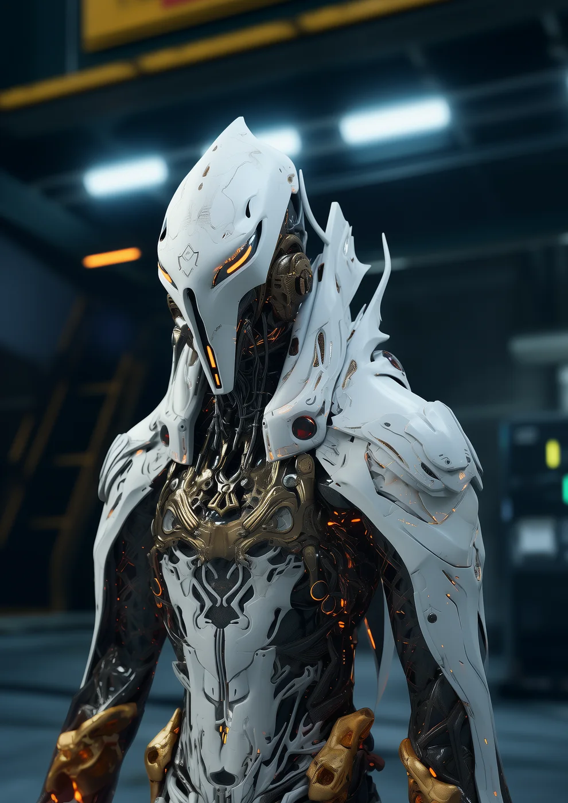

©
©
GENEZYS ARCHIVE · Earth 1 · Legionnaire
Jexiron
Gateway Architect

Archive record
Jexiron studies the portal more closely than anyone on Earth 1, and is the least comfortable with what that study has revealed. The Singularity Tear rips a hole in space-time and cleanses allies in the same moment. Jexiron's notes on the portal are the most guarded documents the Eternal Custodian keeps.
Combat signature
Singularity Tear
170 Cosmara
200 Animus
250 Vitalis
Rips hole in space-time: Deals 90 damage and reduces 90 Cosmara to a different enemy. Clears all DoT from all allies.
Genezys 07:04 ™&©2026LEGIONS
Return to LEGIONS